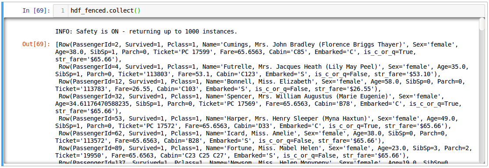
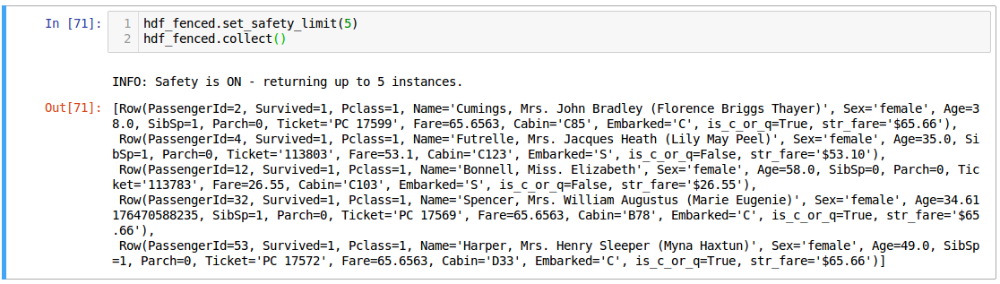
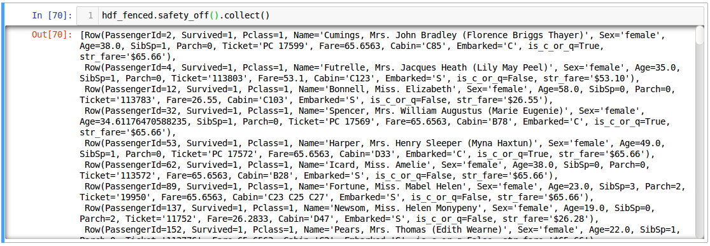

HandySpark¶
Bringing pandas-like capabilities to Spark dataframes!¶
**HandySpark** is a package designed to improve **PySpark** user experience, especially when it comes to **exploratory data analysis**, including **visualization** capabilities!
It makes fetching data or computing statistics for columns really easy, returning **pandas objects** straight away.
It also leverages on the recently released **pandas UDFs** in Spark to allow for an out-of-the-box usage of common **pandas functions** in a Spark dataframe.
Moreover, it introduces the **stratify** operation, so users can perform more sophisticated analysis, imputation and outlier detection on stratified data without incurring in very computationally expensive **groupby** operations.
Finally, it brings the long missing capability of **plotting** data while retaining the advantage of performing distributed computation (unlike many tutorials on the internet, which just convert the whole dataset to pandas and then plot it - don’t ever do that!).
Google Colab¶
Eager to try it out right away? Don’t wait any longer!
Open the notebook directly on Google Colab and try it yourself:
Quick Start¶
To use **HandySpark**, all you need to do is import the package and, after loading your data into a Spark dataframe, call the **toHandy()** method to get your own **HandyFrame**:
from pyspark.sql import SparkSession
spark = SparkSession.builder.getOrCreate()
from handyspark import *
sdf = spark.read.csv('./tests/rawdata/train.csv', header=True, inferSchema=True)
hdf = sdf.toHandy()
Fetching and plotting data¶
Now you can easily fetch data as if you were using pandas, just use the **cols** object from your **HandyFrame**:
hdf.cols['Name'][:5]
It should return a pandas Series object:
If you include a list of columns, it will return a pandas DataFrame.
Due to the distributed nature of data in Spark, it is only possible to fetch the top rows of any given **HandyFrame**.
Using **cols** you have access to several pandas-like column and DataFrame based methods implemented in Spark:
- min / max / median / q1 / q3 / stddev / mode
- nunique
- value_counts
- corr
- hist
- boxplot
- scatterplot
For instance:
hdf.cols['Embarked'].value_counts(dropna=False)
You can also make some plots:
fig, axs = plt.subplots(1, 4, figsize=(12, 4))
hdf.cols['Embarked'].hist(ax=axs[0])
hdf.cols['Age'].boxplot(ax=axs[1])
hdf.cols['Fare'].boxplot(ax=axs[2])
hdf.cols[['Fare', 'Age']].scatterplot(ax=axs[3])
{kind=link}
Handy, right (pun intended!)? But things can get **even more** interesting if you use **stratify**!
Stratify¶
Stratifying a HandyFrame means using a **split-apply-combine** approach. It will first split your HandyFrame according to the specified (discrete) columns, then it will apply some function to each stratum of data and finally combine the results back together.
This is better illustrated with an example - let’s try the stratified version of our previous value_counts:
hdf.stratify(['Pclass']).cols['Embarked'].value_counts()
Cool, isn’t it? Besides, under the hood, not a single **group by** operation was performed - everything is handled using filter clauses! So, **no data shuffling**!
What if you want to **stratify** on a column containing continuous values? No problem!
hdf.stratify(['Sex', Bucket('Age', 2)]).cols['Embarked'].value_counts()
You can use either **Bucket** or **Quantile** to discretize your data in any given number of bins!
What about **plotting** it? Yes, **HandySpark** can handle that as well!
hdf.stratify(['Sex', Bucket('Age', 2)]).cols['Embarked'].hist(figsize=(8, 6))
{kind=link}
Handling missing data¶
**HandySpark** makes it very easy to spot and fill missing values. To figure if there are any missing values, just use **isnull**:
hdf.isnull(ratio=True)
Ok, now you know there are 3 columns with missing values: Age, Cabin and Embarked. It’s time to fill those values up! But, let’s skip Cabin, which has 77% of its values missing!
So, Age is a continuous variable, while Embarked is a categorical variable. Let’s start with the latter:
hdf_filled = hdf.fill(categorical=['Embarked'])
**HandyFrame** has a **fill** method which takes up to 3 arguments:
- categorical: a list of categorical variables
- continuous: a list of continuous variables
- strategy: which strategy to use for each one of the continuous variables (either
meanormedian)
Categorical variables use a mode strategy by default.
But you do not need to stick with the basics anymore… you can fancy it up using **stratify** together with **fill**:
hdf_filled = hdf_filled.stratify(['Pclass', 'Sex']).fill(continuous=['Age'], strategy=['mean'])
How do you know which values are being used? Simple enough:
hdf_filled.statistics_
There you go! The filter clauses and the corresponding imputation values!
But there is **more** - once you’re with your imputation procedure, why not generate a **custom transformer** to do that for you, either on your test set or in production?
You only need to call the **imputer** method of the **transformer** object that every **HandyFrame** has:
imputer = hdf_filled.transformers.imputer()
In the example above, **imputer** is now a full-fledged serializable PySpark transformer! What does that mean? You can use it in your **pipeline** and **save / load** at will :-)
Detecting outliers¶
Second only to the problem of missing data, outliers can pose a challenge for training machine learning models.
**HandyFrame** to the rescue, with its **outliers** method:
hdf_filled.outliers(method='tukey', k=3.)
Currently, only ***Tukey’s*** method is available (I am working on Mahalanobis distance!). This method takes an optional **k** argument, which you can set to larger values (like 3) to allow for a more loose detection.
The good thing is, now we can take a peek at the data by plotting it:
fig, axs = plt.subplots(1, 4, figsize=(16, 4))
hdf_filled.cols['Parch'].hist(ax=axs[0])
hdf_filled.cols['SibSp'].hist(ax=axs[1])
hdf_filled.cols['Age'].boxplot(ax=axs[2], k=3)
hdf_filled.cols['Fare'].boxplot(ax=axs[3], k=3)
{kind=link}
Let’s focus on the Fare column - what can we do about it? Well, we could use Tukey’s fences to, er… **fence** the outliers :-)
hdf_fenced = hdf_filled.fence(['Fare'])
Which values were used, you ask?
hdf_fenced.fences_
It works quite similarly to the **fill** method and, I hope you guessed, it **also** gives you the ability to create the corresponding **custom transformer** :-)
fencer = hdf_fenced.transformers.fencer()
Pandas and more pandas!¶
With **HandySpark** you can feel **almost** as if you were using traditional pandas :-)
To gain access to the whole suite of available pandas functions, you need to leverage the **pandas** object of your **HandyFrame**:
some_ports = hdf_fenced.pandas['Embarked'].isin(values=['C', 'Q'])
some_ports
In the example above, **HandySpark** treats the Embarked column as if it were a pandas Series and, therefore, you may call its **isin** method!
But, remember Spark has **lazy evaluation**, so the result is a **column expression** which leverages the power of **pandas UDFs** (provived that PyArrow is installed, otherwise it will fall back to traditional UDFs).
The only thing left to do is to actually **assign** the results to a new column, right?
hdf_fenced = hdf_fenced.assign(is_c_or_q=some_ports)
# What's in there?
hdf_fenced.cols['is_c_or_q'][:5]
You got that right! **HandyFrame** has a very convenient **assign** method, just like in pandas!
It does not get much easier than that :-) There are several column methods available already:
- betweeen / between_time
- isin
- isna / isnull
- notna / notnull
- abs
- clip / clip_lower / clip_upper
- replace
- round / truncate
- tz_convert / tz_localize
And this is not all! Both specialized **str** and **dt** objects from pandas are available as well!
For instance, if you want to find if a given string contains another substring?
col_mrs = hdf_fenced.pandas['Name'].str.find(sub='Mrs.')
hdf_fenced = hdf_fenced.assign(is_mrs=col_mrs > 0)
{kind=link}
There are many, many more available methods:
- **String methods**:
- contains
- startswith / endswitch
- match
- isalpha / isnumeric / isalnum / isdigit / isdecimal / isspace
- islower / isupper / istitle
- replace
- repeat
- join
- pad
- slice / slice_replace
- strip / lstrip / rstrip
- wrap / center / ljust / rjust
- translate
- get
- normalize
- lower / upper / capitalize / swapcase / title
- zfill
- count
#. find / rfind #.
len
- **Date / Datetime methods**:
- is_leap_year / is_month_end / is_month_start / is_quarter_end / is_quarter_start / is_year_end / is_year_start
- strftime
- tz / time / tz_convert / tz_localize
- day / dayofweek / dayofyear / days_in_month / daysinmonth
- hour / microsecond / minute / nanosecond / second
- week / weekday / weekday_name
- month / quarter / year / weekofyear
- date
- ceil / floor / round
- normalize
Your own functions¶
The sky is the limit! You can create regular Python functions and use assign to create new columns :-)
No need to worry about turning them into **pandas UDFs** - everything is handled by **HandySpark** under the hood!
The arguments of your function (or lambda) should have the names of the columns you want to use. For instance, to take the log of Fare:
import numpy as np
hdf_fenced = hdf_fenced.assign(logFare=lambda Fare: np.log(Fare + 1))
{kind=link}
You can also use multiple columns:
hdf_fenced = hdf_fenced.assign(fare_times_age=lambda Fare, Age: Fare * Age)
Even though the result is kinda pointless, it will work :-)
Keep in mind that the **return type**, that is, the column type of the new column, will be the same as the first column used (Fare, in the example).
What if you want to return something of a **different** type?! No worries! You only need to **wrap** your function with the desired return type. An example should make this more clear:
from pyspark.sql.types import StringType
hdf_fenced = hdf_fenced.assign(str_fare=StringType.ret(lambda Fare: Fare.map('${:,.2f}'.format)))
hdf_fenced.cols['str_fare'][:5]
Basically, we imported the desired output type - **StringType** - and used its extended method **ret** to wrap our lambda function that formats our numeric Fare column into a string.
It is also possible to create a more complex type, like an array of doubles:
from pyspark.sql.types import ArrayType, DoubleType
def make_list(Fare):
return Fare.apply(lambda v: [v, v*2])
hdf_fenced = hdf_fenced.assign(fare_list=ArrayType(DoubleType()).ret(make_list))
hdf_fenced.cols['fare_list'][:5]
OK, so, what happened here?
- First, we imported the necessary types, **ArrayType** and **DoubleType**, since we are building a function that returns a list of doubles.
- We actually built the function - notice that we call **apply** straight from **Fare**, which is treated as a pandas Series under the hood.
- We **wrap** the function with the return type
ArrayType(DoubleType())by invoking the extended methodret. - Finally, we assign it to a new column name, and that’s it!
Nicer exceptions¶
Now, suppose you make a mistake while creating your function… if you have used Spark for a while, you already realized that, when an exception is raised, it will be **loooong**, right?
To help you with that, **HandySpark** analyzes the error message and parses it nicely for you at the very **top** of the error message, in **bold red**:

Safety first¶
**HandySpark** wants to protect your cluster and network, so it implements a **safety** whenever you perform an operation that are going to retrieve **ALL** data from your **HandyFrame**, like collect or toPandas.
How does that work? Every time a **HandyFrame** has one of these methods called, it will output up to the **safety limit**, which has a default of **1,000 elements**.
{kind=link}
Do you want to set a different safety limit for your **HandyFrame**?
{kind=link}
What if you want to retrieve everything nonetheless?! You can invoke the **safety_off** method prior to the actual method you want to call and you get a **one-time** unlimited result.
{kind=link}